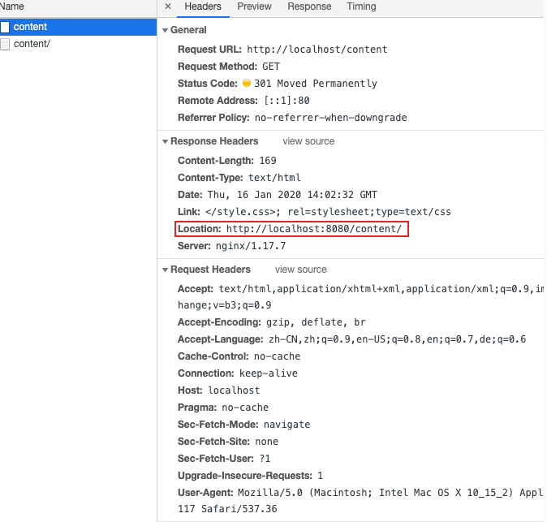
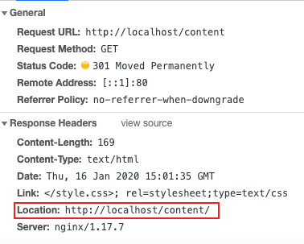
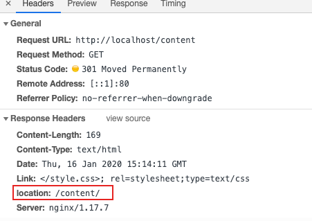

最近遇到这样一个问题，通过 Spring Cloud Gateway 访问 Nginx 的时候，在某些情况下Nginx 会重定向，但是问题是，不会重定向到 Spring Cloud Gateway 的 URL。
Spring Cloud Gateway 的 URL 为： http://localhost, Nginx URL 为 http://localhost:8080。当访问 http://localhost/content 时，Gateway 会转而请求 http://localhost:8080/content ，这时，Nginx 会重定向到 http://localhost:8080/content/。这时候浏览器就直接指向了 Nginx，而不是 Gateway。
从以下浏览器日志可以看出，Nginx 返回了 301，重定向后的 URL 为：Location: http://localhost:8080/content/

因此希望可以通过 gateway 的 Filter 把 Location 改为：http://localhost/content/。
PreserveHostHeader这也是网上一些文章中建议的方法，在大部分情况下是可以工作的。但是对于 Nginx 似乎不起作用。
PreserveHostHeader 告知 httpClient(Gateway 中负责转发的组件）使用原有的 Host，如果 Gateway 的后端（如Nginx）在 Redirect 时考虑 Request Host Header ，则有可能会影响最终的 Redirection URL。但是对于 Nginx 的，Request Host Header 并没有影响到 Redirection URL。
spring:
cloud:
gateway:
routes:
- id: preserve_host_route
uri: https://example.org
filters:
- PreserveHostHeader
PreserveHostHeader除了 PreserveHostHeader 外，Spring Cloud Gateway 2.2.3 提供了新的 Filter： RewriteLocationResponseHeader。可以如下配置：
routes:
- id: content
uri: http://localhost:8080
predicates:
- Path=/content/**
filters:
- RewriteLocationResponseHeader=AS_IN_REQUEST, Location, ,

对于旧版的 Gateway，可以使用自定义的 Filter Workaround 这个问题。Filter 的原理如下：
尝试删除 Location 中的 Host 部分呢，把 http://localhost:8080/content/ 转变为 /content/。 这样Location 就变为：/content/,这样浏览器就会使用，原有的 Host 做重定向，从而指向：http://localhost/content/
routes:
- id: content
uri: http://localhost:8080
predicates:
- Path=/content/**
filters:
- MyFilter

import org.slf4j.Logger;
import org.slf4j.LoggerFactory;
import org.springframework.cloud.gateway.filter.GatewayFilter;
import org.springframework.cloud.gateway.filter.factory.AbstractGatewayFilterFactory;
import org.springframework.http.HttpStatus;
import org.springframework.http.server.reactive.ServerHttpResponse;
import org.springframework.stereotype.Component;
import org.springframework.web.server.ServerWebExchange;
import reactor.core.publisher.Mono;
import java.net.MalformedURLException;
import java.net.URL;
@Component
public class RedirectWaFilter extends AbstractGatewayFilterFactory<RedirectWaFilter.Config> {
private Logger logger = LoggerFactory.getLogger(RedirectWaFilter.class);
public RedirectWaFilter() {
super(Config.class);
}
@SuppressWarnings("unused")
private boolean isAuthorizationValid(String authorizationHeader) {
boolean isValid = true;
// Logic for checking the value
return isValid;
}
@SuppressWarnings("unused")
private Mono<Void> onError(ServerWebExchange exchange, String err, HttpStatus httpStatus) {
ServerHttpResponse response = exchange.getResponse();
response.setStatusCode(httpStatus);
return response.setComplete();
}
@Override
public GatewayFilter apply(Config config) {
return (exchange, chain) -> chain.filter(exchange).then(Mono.defer(() -> {
if (!exchange.getResponse().isCommitted()) {
System.out.println("status code: " + exchange.getResponse().getStatusCode());
if (exchange.getResponse().getStatusCode().is3xxRedirection()) {
String locationPath = "";
try {
locationPath = new URL(exchange.getResponse().getHeaders().get("location").get(0)).getPath();
exchange.getResponse().getHeaders().set("location", locationPath);
} catch (MalformedURLException e) {
e.printStackTrace();
}
return exchange.getResponse().setComplete();
}
}
return Mono.empty();
}));
}
public static class Config {
// Put the configuration properties
}
}